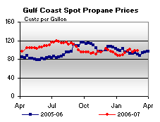

Released on March 7, 2007
(Next Release on March 14, 2007)
Punxsutawney Phil Was Wrong
For the past several years, the first February edition of This Week In Petroleum (TWIP) issued after Groundhog Day has reflected on the energy market implications of the weather forecast that is, by tradition, based on Punxsutawney Phil’s ability to see his shadow on that fateful morning. This year, the famous rodent of Gobbler’s Knob did not see his shadow, which by legend, signals an early spring. However, residents of the many areas that continue to experience severe winter weather would undoubtedly take issue with that forecast and reach the unhappy conclusion that Punxsutawney Phil was simply wrong.
Despite the somewhat mixed bag of weather so far this winter, the major space heating demand regions in the Midwest and East Coast have been battered by cold temperatures and severe winter storms over recent weeks. As mentioned in the January 24, 2007 issue of TWIP, the relatively mild weather during the first half of the heating season put downward price pressure on heating oil and propane markets, as U.S and regional inventories of these fuels remained at comfortable levels for that time of year. The inventory safety net, or cushion, that existed during early January 2007 was expected to dampen any potential late-season surges in demand and soften any potential price surges.
Distillate fuel markets, particularly on the East Coast (PADD I) where most of the nation’s demand for heating oil occurs, have continued to fare relatively well with respect to distillate fuel inventories and residential heating oil prices through February. Between December 31, 2006 and March 2, 2007, East Coast distillate fuel inventories (diesel and heating fuel oil combined) declined by 21.9 million barrels. The most recent 5-year average for the January-February period was 12.8 million barrels. But, despite the above-average inventory withdrawal during this period, the apparent distillate fuel inventory cushion acted to moderate residential heating oil prices as from January 1 through March 5, 2007, average residential heating oil prices on the East Coast (PADD I) rose just 7.8 cents per gallon, a level well below the 5-year average for this period of 13.3 cents per gallon (in nominal dollars). Moreover, with distillate fuel inventories in the East Coast continuing to track near the upper boundary of the average range for this time of year, the apparent distillate fuel inventory cushion may still provide some level of cover for heating oil markets during the remaining weeks of the heating season.
Propane markets, particularly in the Midwest (PADD II) where most of the nation’s heating demand for propane occurs, also saw an earlier season inventory cushion contribute to buffer residential propane prices against the effects of the severe winter over this region since early January. From the upper boundary of the average range at the end of December 2006, through March 2, 2007, Midwest (PADD II) inventories dropped by 12.7 million barrels, the largest decline ever during this period. While a drop of this magnitude might typically cause propane market prices to spike, Midwest residential propane prices reported instead a relatively modest 3.4-cents-per gallon increase over this same period, compared with the most recent 5-year average gain of 9.4 cents per gallon. In contrast to the apparent cushion remaining for distillate fuel, Midwest propane inventories are moderately above the record low reported for the end of February.
The New England region (PADD IA), also warrants close monitoring over the next several weeks, as the recent railroad strike by Canadian National, Canada’s largest railroad company, and the temporary shutdown of a major propane pipeline serving the area, combined to severely tighten propane supplies in that area. Although both of these major supply sources have since been restored, propane inventories in the region remain extremely susceptible to any adverse weather and/or other market disruptions.
Consequently, while the mild weather during the first half of the heating season provided a relatively strong inventory safety net, weather developments since that time caused inventories to fall sharply, leaving markets more vulnerable to potential adverse weather for the remainder of the heating season. This situation is readily apparent when evaluating total inventory data for these fuels on a days-of-supply basis. As the graph below shows, days-of-supply for both distillate fuel and propane showed relatively sharp declines from December 29, 2006 through March 2, 2007.
With frigid temperatures forecast for the Upper Plains, Great Lakes and Northeast regions this week, distillate fuel and propane inventories may continue to exhibit unexpected tightness. Nevertheless, at this late date in the season, heating fuels markets are still most likely to follow the typical seasonal practice of heavy reliance on inventories that are already held in the consuming region, forgoing any major resupply from distant domestic production or foreign sources, as well as concurrent price hikes required to bring such additional supply to the marketplace.
Residential Heating Oil Prices Maintain Upward Momentum
Residential heating oil prices increased for the sixth consecutive week with the period ending March 5, 2007. The average residential heating oil price gained 2.3 cents per gallon last week to reach 249.6 cents per gallon, an increase of 5.3 cents from this time last year. Wholesale heating oil prices gained 1.9 cents to reach 188.5 cents per gallon, a decrease of 0.6 cent compared to the same period last year.
The average residential propane price held fast, remaining at 202.9 cents per gallon. This was an increase of 3.8 cents compared to the 199.1 cents per gallon average for this same time last year. Wholesale propane prices decreased by 0.6 cent per gallon, from 108.3 to 107.7 cents per gallon. This was a gain of 11.4 cents from the March 6, 2006 price of 96.3 cents per gallon.
Gasoline and Diesel Prices Continue to Climb
Gasoline prices rose sharply again, increasing 12.2 cents to 250.5 cents per gallon for the week of March 5, 2007. Prices are now 17.4 cents per gallon higher than at this time last year. All regions reported price increases. The East Coast had the largest increase, with prices up 15.4 cents to 249.1 cents per gallon. Midwest prices rose 9.5 cents to 246.5 cents per gallon. Prices for the Gulf Coast were up 13.3 cents to 236.7 cents per gallon. Rocky Mountain prices increased 10.4 cents to 235.3 cents per gallon, while prices for the West Coast were up 10.1 cents to 276.5 cents per gallon. California prices were also up 10.1 cents, to 289.7 cents per gallon, 41.7 cents per gallon above last year’s price.
The price for retail diesel also continued its climb, increasing 7.5 cents to 262.6 cents per gallon. The price is now 8.1 cents per gallon higher than at this time last year. All regions reported price increases. East Coast prices rose 7.8 cents to 260.4 cents per gallon. Midwest prices were up 8.3 cents to 260.6 cents per gallon. The Gulf Coast saw an increase of 9.0 cents to 258.7 cents per gallon, while Rocky Mountain prices were also up 9.0 cents, to 265.8 cents per gallon. Prices on the West Coast saw an increase of 0.5 cent to 279.5 cents per gallon. California prices fell 1.4 cents to 289.7 cents per gallon. However, prices remain 15.8 cents per gallon higher than at this time last year.
Propane Stockdraw Sets February Record
Propane stockholders posted a record 16.5-million-barrel decline during February, a level that was also more than 60 percent above the most recent 5-year average of about 10.3 million barrels. The record stockdraw reflected mostly the colder-than-normal temperatures that were experienced over large areas of the nation during the month. Last week, propane stockholders reported inventories lower by 3.2 million barrels, leaving the nations primary supply of propane at an estimated 28.7 million barrels as of March 2, 2007. Gulf Coast inventories led the way with the largest weekly decline that totaled 2.5 million barrels, followed by the Midwest that reported inventories lower by 0.3 million barrels. East Coast inventories during this same time moved lower by 0.2 million barrels, while inventories in the combined Rocky Mountain/West Coast region remained relatively unchanged. Propylene non-fuel use inventories gained 0.1 million barrels last week to account for a 12.1 percent share of total propane/propylene inventories, up from the prior week’s 10.7 percent share.
Text from the previous editions of “This Week In Petroleum” is now accessible through a link at the top right-hand corner of this page.
| Retail Prices (Cents Per Gallon) | |||||||
| Retail Data | Changes From | Retail Data | Changes From | ||||
| 03/05/07 | Week | Year | 03/05/07 | Week | Year | ||
| Gasoline | 250.5 | Heating Oil | 249.6 | ||||
| Diesel Fuel | 262.6 | Propane | 202.9 | ||||
| Spot Prices (Cents Per Gallon) | |||||||||||||||||||||||||||||||||||||||
|
 | ||||||||||||||||||||||||||||||||||||||
| Stocks (Million Barrels) | |||||||
| Stocks Data | Changes From | Stocks Data | Changes From | ||||
| 03/02/07 | Week | Year | 03/02/07 | Week | Year | ||
| Crude Oil | 324.2 | Distillate | 123.2 | ||||
| Gasoline | 216.4 | Propane | 28.747 | ||||